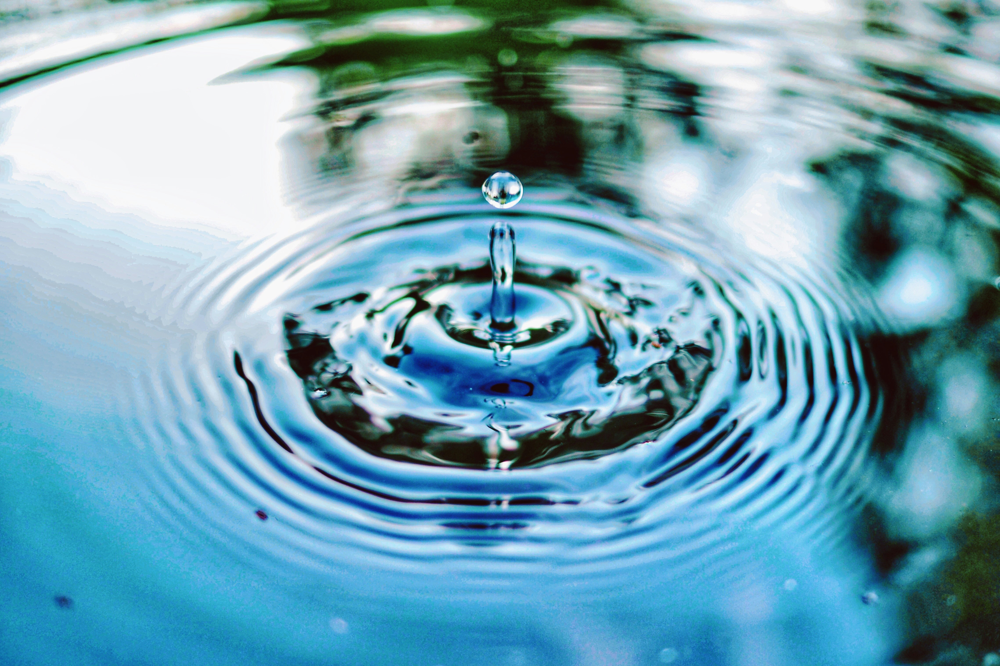
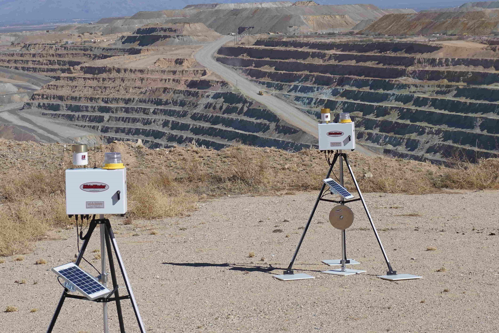
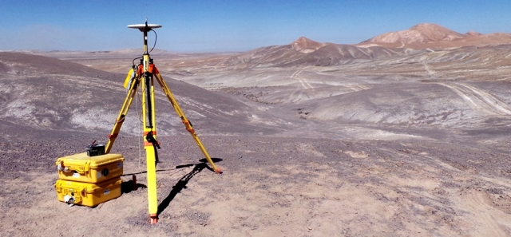
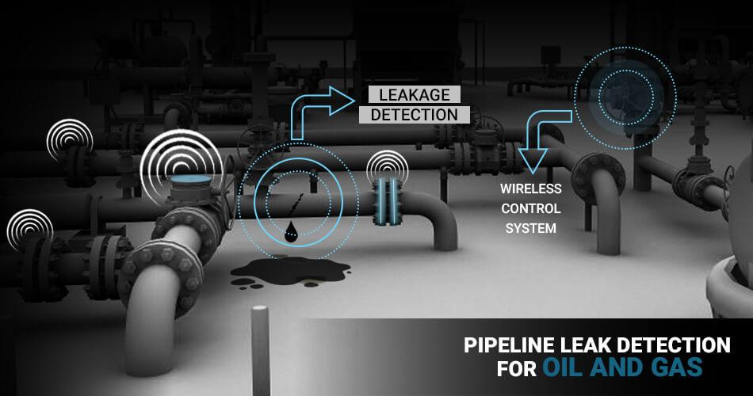
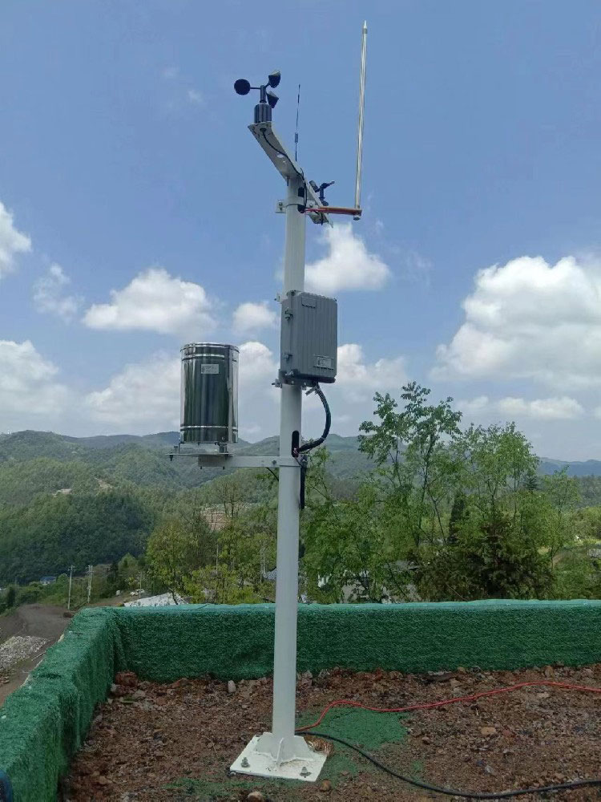
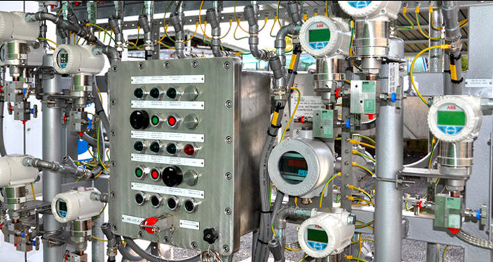

📞 +507 6675-8529
✉ contacto@zernikeal.com
Las soluciones tecnológicas de Zernike Panamá permiten realizar mediciones, monitoreo y diagnóstico en múltiples sectores relacionados con el agua, el ambiente, la infraestructura y la industria.
Tecnologías para la medición y control de redes de agua potable, sistemas hidráulicos y recursos hídricos, incluyendo caudal, presión, nivel y detección de fugas.

Sistemas de vigilancia ambiental para el control de la calidad del agua, monitoreo de ecosistemas y medición de parámetros químicos en ambientes naturales e industriales.
Instrumentación para diagnóstico estructural, monitoreo geotécnico y control de deformaciones en infraestructuras, obras civiles y proyectos de ingeniería.

Soluciones para mediciones geodésicas de precisión, estudios geofísicos y análisis del subsuelo para aplicaciones científicas e ingenieriles.

Equipos avanzados para la localización de fugas en redes hidráulicas y sistemas de detección de gases para seguridad industrial y control de instalaciones.

Instrumentación para monitoreo meteorológico e hidrológico, incluyendo estaciones climáticas, medición de precipitaciones y control de cuencas.

Analizadores y sensores para la medición de parámetros físicos y químicos en procesos industriales, control de calidad y optimización de operaciones.
